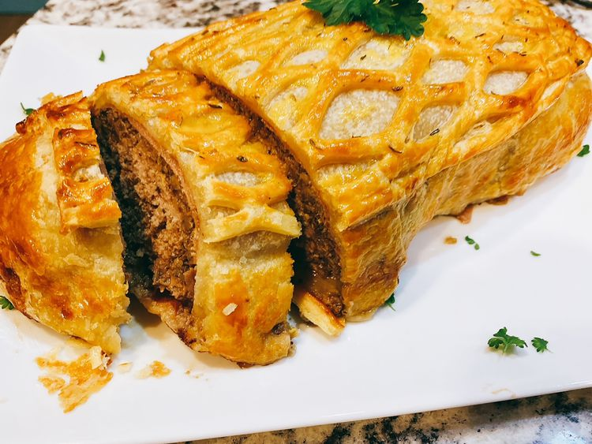

Wellington

Description
This tasty beef Wellington is a twist on the traditional chateaubriand made with beef tenderloin. Using a 90% lean ground beef blended with minced mushrooms cuts down on excess fat, and the mushrooms add an incredible umami effect.
Ingredients
- 5 ounces button mushrooms, coarsely chopped
- 12 ounces portobello mushrooms, coarsely chopped
- 1 pound 90% lean ground beef
- 2 tablespoons panko bread crumbs
- 1 large egg
- 1 teaspoon Worcestershire sauce
- 1 teaspoon dried thyme, divided
- 1/4 teaspoon salt, or to taste
- 1/8 teaspoon ground black pepper, or to taste
- 4 tablespoons butter
- 2 shallots
- 2 tablespoons sherry
Steps
- Combine button mushrooms and portobello mushrooms in a food processor and process until finely ground and they resemble ground beef. Place 5 ounces processed mushrooms in a large bowl; set remaining 12 ounces mushrooms aside for mushroom duxelles.
- Add ground beef, panko, egg, Worcestershire sauce, 1/2 teaspoon thyme, 1/4 teaspoon salt, and 1/8 teaspoon pepper to the bowl with the 5 ounces of mushrooms. Mix with your hands or a spoon until well combined. Turn beef mixture out onto a piece of wax paper, and shape into a 5x10-inch rectangular loaf.
- Preheat the oven to 375 degrees F (190 degrees C). Line a baking sheet with aluminum foil, and place an elevated wire rack onto the baking sheet.
- Place 2 shallots into the same food processor and pulse until finely chopped.
- For mushroom duxelles, melt butter In a skillet over medium-high heat. Add reserved 12 ounces mushrooms, minced shallots, and remaining 1/2 teaspoon thyme and cook, stirring, until mushrooms have released their liquid, about 10 minutes. Add sherry and cook until liquid is evaporated. Turn off heat and let mixture cool. Season with salt and pepper.
- Unfold a sheet of puff pastry. Puff pastry comes folded in thirds; cut off one of the short ends at the 1/3 mark, and reserve to make lattice (optional). Roll out the larger piece of puff pastry on a lightly-floured surface into a 13x15-inch rectangle, which will be large enough to wrap the beef loaf on all sides.
- Leaving a 1-inch border uncovered, place prosciutto slices, slightly overlapping, evenly onto the puff pastry to cover. Spread mustard evenly over prosciutto. Spread mushroom duxelles evenly over mustard layer.
- Center beef loaf crosswise on top of pastry rectangle. Bring in the sides of the puff pastry, pinching edges together. Bring top and bottom edges of puff pastry together and fold to seal beef loaf completely inside. Brush pastry with beaten egg yolk.
- Optional lattice: roll out the reserved 1/3 sheet puff pastry on a lightly floured surface. Using a lattice cutter or a sharp paring knife, cut approximately 1-inch slits in the puff pastry in parallel lines about 1 inch apart, with each line of cuts offset from the adjacent line of cuts by about 1/2 inch. Gently spread the lattice-cut pastry and place over the top of pastry-wrapped loaf. Brush lattice with remaining beaten egg yolk.
- Place pastry-wrapped loaf on the rack on top of the prepared baking sheet.
- Bake in the preheated oven until an instant-read thermometer inserted into the center reads at least 160 degrees F (71 degrees C), 30 to 45 minutes. Allow to rest for 10 minutes before slicing with a serrated knife.